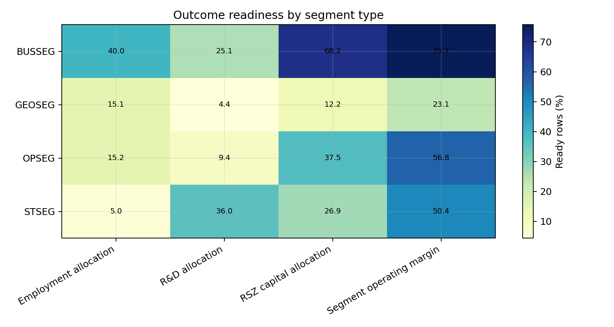
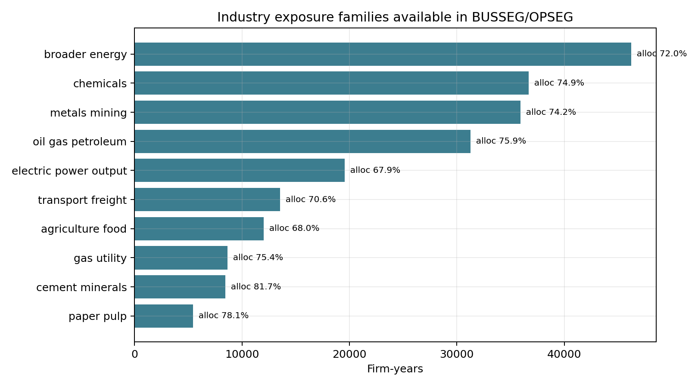
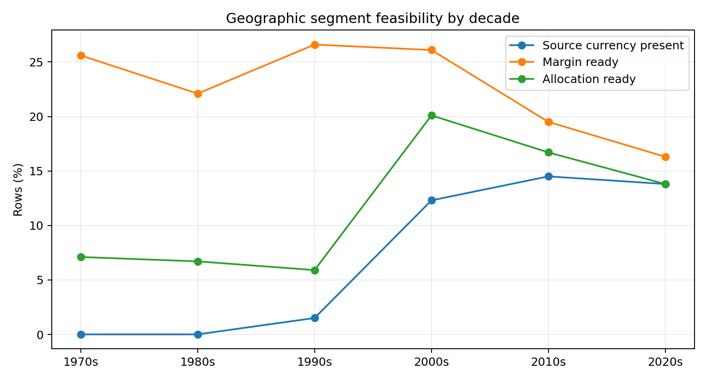

Segment Evidence Appendix
Generated at UTC: 2026-06-09T16:11:03+00:00. Source: data/raw/segment_data.csv.
Outcome Readiness Detail

| stype | design | outcome_family | rows | ready_rows | ready_pct | firms_with_ready_rows | firm_years_with_ready_rows | min_year | max_year |
|---|---|---|---|---|---|---|---|---|---|
| BUSSEG | Segment operating margin | Alpha / segment performance | 674,184 | 510,137 | 75.7 | 27,741 | 304,100 | 1,976 | 2,026 |
| GEOSEG | Segment operating margin | Alpha / segment performance | 757,202 | 174,729 | 23.1 | 12,540 | 101,495 | 1,976 | 2,026 |
| OPSEG | Segment operating margin | Alpha / segment performance | 79,700 | 45,268 | 56.8 | 1,193 | 9,504 | 1,996 | 2,026 |
| STSEG | Segment operating margin | Alpha / segment performance | 2,331 | 1,175 | 50.4 | 53 | 248 | 1,998 | 2,025 |
| GEOSEG | Geographic FX exposure | Foreign/currency exposure | 757,202 | 423,150 | 55.9 | 17,282 | 160,035 | 1,977 | 2,026 |
| GEOSEG | Segment granularity | Information production / disclosure | 757,202 | 757,202 | 100.0 | 26,300 | 307,470 | 1,976 | 2,026 |
| BUSSEG | Segment granularity | Information production / disclosure | 674,184 | 674,184 | 100.0 | 29,843 | 352,429 | 1,976 | 2,026 |
| OPSEG | Segment granularity | Information production / disclosure | 79,700 | 79,700 | 100.0 | 1,544 | 13,650 | 1,996 | 2,026 |
| STSEG | Segment granularity | Information production / disclosure | 2,331 | 2,331 | 100.0 | 73 | 432 | 1,997 | 2,025 |
| BUSSEG | R&D allocation | Innovation/resources | 674,184 | 169,419 | 25.1 | 16,222 | 136,881 | 1,976 | 2,026 |
| GEOSEG | R&D allocation | Innovation/resources | 757,202 | 33,343 | 4.4 | 4,670 | 26,264 | 1,991 | 2,026 |
| OPSEG | R&D allocation | Innovation/resources | 79,700 | 7,461 | 9.4 | 284 | 1,541 | 1,999 | 2,026 |
| STSEG | R&D allocation | Innovation/resources | 2,331 | 840 | 36.0 | 32 | 151 | 1,998 | 2,025 |
| BUSSEG | RSZ capital allocation | Internal capital allocation | 674,184 | 459,511 | 68.2 | 28,241 | 294,569 | 1,976 | 2,026 |
| GEOSEG | RSZ capital allocation | Internal capital allocation | 757,202 | 92,357 | 12.2 | 10,509 | 76,580 | 1,976 | 2,026 |
| OPSEG | RSZ capital allocation | Internal capital allocation | 79,700 | 29,855 | 37.5 | 790 | 5,763 | 1,996 | 2,026 |
| STSEG | RSZ capital allocation | Internal capital allocation | 2,331 | 628 | 26.9 | 30 | 132 | 1,999 | 2,025 |
| BUSSEG | Capex-to-sales allocation | Investment intensity | 674,184 | 523,036 | 77.6 | 28,734 | 310,961 | 1,976 | 2,026 |
| GEOSEG | Capex-to-sales allocation | Investment intensity | 757,202 | 113,525 | 15.0 | 11,345 | 84,887 | 1,976 | 2,026 |
| OPSEG | Capex-to-sales allocation | Investment intensity | 79,700 | 50,248 | 63.0 | 1,055 | 8,890 | 1,996 | 2,026 |
| STSEG | Capex-to-sales allocation | Investment intensity | 2,331 | 1,425 | 61.1 | 48 | 269 | 1,998 | 2,025 |
| BUSSEG | Asset allocation | Investment relative to segment assets | 674,184 | 502,412 | 74.5 | 28,637 | 306,820 | 1,976 | 2,026 |
| GEOSEG | Asset allocation | Investment relative to segment assets | 757,202 | 105,656 | 14.0 | 11,057 | 82,794 | 1,976 | 2,026 |
| OPSEG | Asset allocation | Investment relative to segment assets | 79,700 | 41,306 | 51.8 | 968 | 7,603 | 1,996 | 2,026 |
| STSEG | Asset allocation | Investment relative to segment assets | 2,331 | 948 | 40.7 | 40 | 190 | 1,998 | 2,025 |
| BUSSEG | Employment allocation | Labor/resources | 674,184 | 269,871 | 40.0 | 26,084 | 225,527 | 1,976 | 2,026 |
| GEOSEG | Employment allocation | Labor/resources | 757,202 | 114,315 | 15.1 | 10,853 | 79,334 | 1,991 | 2,026 |
| OPSEG | Employment allocation | Labor/resources | 79,700 | 12,119 | 15.2 | 506 | 2,779 | 1,998 | 2,026 |
| STSEG | Employment allocation | Labor/resources | 2,331 | 117 | 5.0 | 13 | 33 | 1,998 | 2,025 |
Segment Type And Variable Coverage
| stype | rows | firms | firm_years | min_year | max_year | unique_segment_names |
|---|---|---|---|---|---|---|
| GEOSEG | 757,202 | 26,300 | 307,470 | 1,976 | 2,026 | 3,990 |
| BUSSEG | 674,184 | 29,843 | 352,429 | 1,976 | 2,026 | 64,614 |
| OPSEG | 79,700 | 1,544 | 13,650 | 1,996 | 2,026 | 10,187 |
| STSEG | 2,331 | 73 | 432 | 1,997 | 2,025 | 295 |
Selected variable coverage
| variable | stype | rows | nonmissing_pct | positive_pct | firms_nonmissing | firm_years_nonmissing | min_year | max_year |
|---|---|---|---|---|---|---|---|---|
| capxs | BUSSEG | 674,184 | 77.7 | 67.8 | 28,736 | 311,044 | 1,976.0 | 2,026.0 |
| capxs | GEOSEG | 757,202 | 15.1 | 11.8 | 11,351 | 84,941 | 1,976.0 | 2,026.0 |
| capxs | OPSEG | 79,700 | 63.3 | 53.4 | 1,055 | 8,895 | 1,996.0 | 2,026.0 |
| capxs | STSEG | 2,331 | 61.9 | 34.8 | 49 | 270 | 1,998.0 | 2,025.0 |
| emps | BUSSEG | 674,184 | 40.2 | 37.9 | 26,179 | 226,553 | 1,976.0 | 2,026.0 |
| emps | GEOSEG | 757,202 | 15.4 | 14.0 | 10,877 | 79,681 | 1,991.0 | 2,026.0 |
| emps | OPSEG | 79,700 | 15.4 | 13.5 | 506 | 2,797 | 1,998.0 | 2,026.0 |
| emps | STSEG | 2,331 | 5.0 | 4.3 | 13 | 33 | 1,998.0 | 2,025.0 |
| ias | BUSSEG | 674,184 | 86.0 | 83.3 | 29,345 | 331,013 | 1,976.0 | 2,026.0 |
| ias | GEOSEG | 757,202 | 29.6 | 27.3 | 15,271 | 127,860 | 1,976.0 | 2,026.0 |
| ias | OPSEG | 79,700 | 69.9 | 65.0 | 1,269 | 10,231 | 1,996.0 | 2,026.0 |
| ias | STSEG | 2,331 | 67.4 | 65.2 | 61 | 316 | 1,997.0 | 2,025.0 |
| intseg | BUSSEG | 674,184 | 57.5 | 6.7 | 19,340 | 186,374 | 1,990.0 | 2,026.0 |
| intseg | GEOSEG | 757,202 | 50.8 | 1.5 | 15,025 | 143,475 | 1,991.0 | 2,026.0 |
| intseg | OPSEG | 79,700 | 91.7 | 18.1 | 1,540 | 13,389 | 1,996.0 | 2,026.0 |
| intseg | STSEG | 2,331 | 98.2 | 4.1 | 73 | 428 | 1,997.0 | 2,025.0 |
| oelim | BUSSEG | 674,184 | 53.3 | 0.0 | 18,994 | 176,591 | 1,995.0 | 2,026.0 |
| oelim | GEOSEG | 757,202 | 40.9 | 0.0 | 14,152 | 123,349 | 1,995.0 | 2,026.0 |
| oelim | OPSEG | 79,700 | 85.6 | 0.2 | 1,435 | 12,016 | 1,996.0 | 2,026.0 |
| oelim | STSEG | 2,331 | 76.6 | 0.0 | 61 | 347 | 1,997.0 | 2,025.0 |
| oiadps | BUSSEG | 674,184 | 32.5 | 18.5 | 17,114 | 143,100 | 1,990.0 | 2,026.0 |
| oiadps | GEOSEG | 757,202 | 10.1 | 7.3 | 8,637 | 65,467 | 1,991.0 | 2,026.0 |
| oiadps | OPSEG | 79,700 | 42.8 | 30.1 | 825 | 6,302 | 1,998.0 | 2,026.0 |
| oiadps | STSEG | 2,331 | 15.5 | 11.4 | 18 | 83 | 1,999.0 | 2,025.0 |
| oibdps | BUSSEG | 674,184 | 32.2 | 19.9 | 17,127 | 142,216 | 1,990.0 | 2,026.0 |
| oibdps | GEOSEG | 757,202 | 9.7 | 7.4 | 8,480 | 63,986 | 1,991.0 | 2,026.0 |
| oibdps | OPSEG | 79,700 | 43.4 | 32.6 | 845 | 6,473 | 1,997.0 | 2,026.0 |
| oibdps | STSEG | 2,331 | 21.5 | 16.1 | 21 | 105 | 1,999.0 | 2,025.0 |
| ops | BUSSEG | 674,184 | 83.0 | 54.5 | 28,950 | 322,212 | 1,976.0 | 2,026.0 |
| ops | GEOSEG | 757,202 | 25.4 | 17.9 | 13,983 | 113,005 | 1,976.0 | 2,026.0 |
| ops | OPSEG | 79,700 | 65.2 | 45.2 | 1,195 | 9,541 | 1,996.0 | 2,026.0 |
| ops | STSEG | 2,331 | 56.1 | 43.1 | 53 | 248 | 1,998.0 | 2,025.0 |
| ppents | BUSSEG | 674,184 | 19.1 | 17.4 | 15,758 | 120,372 | 1,995.0 | 2,026.0 |
| ppents | GEOSEG | 757,202 | 15.2 | 14.1 | 9,811 | 75,358 | 1,995.0 | 2,026.0 |
| ppents | OPSEG | 79,700 | 7.2 | 6.5 | 190 | 1,137 | 1,997.0 | 2,025.0 |
| ppents | STSEG | 2,331 | 0.1 | 0.1 | 1 | 3 | 2,015.0 | 2,017.0 |
| rds | BUSSEG | 674,184 | 25.2 | 15.6 | 16,223 | 136,980 | 1,976.0 | 2,026.0 |
| rds | GEOSEG | 757,202 | 4.5 | 1.5 | 4,675 | 26,298 | 1,991.0 | 2,026.0 |
| rds | OPSEG | 79,700 | 9.5 | 0.7 | 284 | 1,545 | 1,999.0 | 2,026.0 |
| rds | STSEG | 2,331 | 36.4 | 0.0 | 32 | 151 | 1,998.0 | 2,025.0 |
| sales | BUSSEG | 674,184 | 99.0 | 87.8 | 29,759 | 349,857 | 1,976.0 | 2,026.0 |
| sales | GEOSEG | 757,202 | 94.2 | 77.3 | 26,203 | 304,837 | 1,976.0 | 2,026.0 |
| sales | OPSEG | 79,700 | 96.9 | 81.0 | 1,543 | 13,523 | 1,996.0 | 2,026.0 |
| sales | STSEG | 2,331 | 98.2 | 87.7 | 73 | 428 | 1,997.0 | 2,025.0 |
| salexg | BUSSEG | 674,184 | 0.0 | 0.0 | 110 | 172 | 1,998.0 | 2,025.0 |
| salexg | GEOSEG | 757,202 | 5.8 | 5.1 | 5,794 | 43,258 | 1,976.0 | 2,026.0 |
| salexg | OPSEG | 79,700 | 0.0 | 0.0 | 12 | 28 | 1,997.0 | 2,009.0 |
| salexg | STSEG | 2,331 | 0.0 | 0.0 | 0 | 0 |
Code-field coverage
| code_field | stype | rows | nonmissing_pct | unique_values |
|---|---|---|---|---|
| gind | BUSSEG | 674,184 | 97.1 | 84 |
| gind | GEOSEG | 757,202 | 97.5 | 84 |
| gind | OPSEG | 79,700 | 99.9 | 79 |
| gind | STSEG | 2,331 | 100.0 | 28 |
| gsubind | BUSSEG | 674,184 | 97.1 | 215 |
| gsubind | GEOSEG | 757,202 | 97.5 | 215 |
| gsubind | OPSEG | 79,700 | 99.9 | 184 |
| gsubind | STSEG | 2,331 | 100.0 | 39 |
| naics | BUSSEG | 674,184 | 97.4 | 1,517 |
| naics | GEOSEG | 757,202 | 97.6 | 1,482 |
| naics | OPSEG | 79,700 | 100.0 | 542 |
| naics | STSEG | 2,331 | 100.0 | 45 |
| naicss1 | BUSSEG | 674,184 | 68.7 | 1,714 |
| naicss1 | GEOSEG | 757,202 | 35.7 | 1,283 |
| naicss1 | OPSEG | 79,700 | 85.0 | 959 |
| naicss1 | STSEG | 2,331 | 88.5 | 54 |
| naicss2 | BUSSEG | 674,184 | 38.4 | 1,671 |
| naicss2 | GEOSEG | 757,202 | 22.6 | 1,293 |
| naicss2 | OPSEG | 79,700 | 50.6 | 866 |
| naicss2 | STSEG | 2,331 | 22.4 | 32 |
| sic | BUSSEG | 674,184 | 100.0 | 449 |
| sic | GEOSEG | 757,202 | 100.0 | 449 |
| sic | OPSEG | 79,700 | 100.0 | 332 |
| sic | STSEG | 2,331 | 100.0 | 41 |
| sics1 | BUSSEG | 674,184 | 90.7 | 1,345 |
| sics1 | GEOSEG | 757,202 | 35.7 | 901 |
| sics1 | OPSEG | 79,700 | 85.0 | 699 |
| sics1 | STSEG | 2,331 | 88.5 | 48 |
| sics2 | BUSSEG | 674,184 | 52.9 | 1,332 |
| sics2 | GEOSEG | 757,202 | 22.2 | 907 |
| sics2 | OPSEG | 79,700 | 49.3 | 636 |
| sics2 | STSEG | 2,331 | 21.6 | 29 |
Time, Keys, And Deduplication
Decade readiness
| decade | stype | rows | firms | margin_ready_pct | allocation_ready_pct | sales_rows | ops_rows | capxs_rows |
|---|---|---|---|---|---|---|---|---|
| 1970s | BUSSEG | 38,283 | 6,054 | 93.6 | 75.0 | 38,194 | 35,929 | 29,046 |
| 1970s | GEOSEG | 32,756 | 6,027 | 25.6 | 7.1 | 30,587 | 9,899 | 2,390 |
| 1980s | BUSSEG | 111,908 | 11,297 | 97.3 | 92.1 | 111,298 | 110,673 | 103,675 |
| 1980s | GEOSEG | 139,593 | 11,282 | 22.1 | 6.7 | 132,006 | 37,389 | 9,488 |
| 1990s | BUSSEG | 135,536 | 14,446 | 91.5 | 84.4 | 134,589 | 128,707 | 118,748 |
| 1990s | GEOSEG | 185,671 | 13,752 | 26.6 | 5.9 | 176,888 | 53,794 | 11,891 |
| 1990s | OPSEG | 2,955 | 417 | 51.8 | 35.6 | 2,945 | 1,757 | 1,860 |
| 1990s | STSEG | 169 | 28 | 58.0 | 17.8 | 169 | 104 | 75 |
| 2000s | BUSSEG | 173,910 | 12,741 | 62.3 | 56.3 | 172,630 | 126,115 | 125,096 |
| 2000s | GEOSEG | 163,364 | 10,429 | 26.1 | 20.1 | 158,042 | 45,636 | 43,182 |
| 2000s | OPSEG | 29,757 | 1,059 | 55.5 | 39.4 | 29,337 | 19,022 | 18,925 |
| 2000s | STSEG | 1,409 | 55 | 59.6 | 28.1 | 1,379 | 935 | 813 |
| 2010s | BUSSEG | 140,830 | 10,640 | 62.4 | 55.1 | 137,825 | 104,334 | 98,319 |
| 2010s | GEOSEG | 154,073 | 8,093 | 19.5 | 16.7 | 140,785 | 31,484 | 32,036 |
| 2010s | OPSEG | 32,799 | 862 | 58.5 | 38.1 | 31,123 | 21,978 | 20,896 |
| 2010s | STSEG | 540 | 26 | 37.8 | 30.7 | 528 | 233 | 403 |
| 2020s | BUSSEG | 73,717 | 7,714 | 61.4 | 51.4 | 72,655 | 53,816 | 48,775 |
| 2020s | GEOSEG | 81,745 | 5,800 | 16.3 | 13.8 | 75,059 | 13,795 | 14,988 |
| 2020s | OPSEG | 14,189 | 521 | 56.6 | 32.2 | 13,832 | 9,213 | 8,740 |
| 2020s | STSEG | 213 | 7 | 15.5 | 16.9 | 213 | 36 | 151 |
Candidate key uniqueness before deduplication
| candidate_key | key_columns | unique_key_count | duplicate_key_count | duplicate_rows | max_rows_per_key | duplicate_row_pct |
|---|---|---|---|---|---|---|
| gvkey_datadate_stype_sid | gvkey, datadate, stype, sid | 1,513,417 | 740,081 | 2,069,949 | 3 | 72.8 |
| plus_segment_name | gvkey, datadate, stype, sid, snms | 1,576,707 | 728,175 | 1,994,753 | 3 | 70.2 |
| plus_srcdate | gvkey, datadate, stype, sid, srcdate | 2,843,285 | 0 | 0 | 1 | 0.0 |
Exposure And Event Screens

| exposure_family | rows | firms | firm_years | min_year | max_year | margin_ready_pct | allocation_ready_pct | busseg_rows | opseg_rows |
|---|---|---|---|---|---|---|---|---|---|
| broader_energy | 80,555 | 3,992 | 46,248 | 1,976 | 2,026 | 77.2 | 72.0 | 70,642 | 9,913 |
| chemicals | 54,482 | 3,443 | 36,693 | 1,976 | 2,026 | 71.3 | 74.9 | 50,487 | 3,995 |
| metals_mining | 60,711 | 3,403 | 35,908 | 1,976 | 2,026 | 72.1 | 74.2 | 49,601 | 11,110 |
| oil_gas_petroleum | 47,669 | 2,808 | 31,291 | 1,976 | 2,025 | 80.7 | 75.9 | 42,666 | 5,003 |
| electric_power_output | 34,219 | 1,482 | 19,568 | 1,976 | 2,026 | 74.6 | 67.9 | 29,643 | 4,576 |
| transport_freight | 21,904 | 1,336 | 13,532 | 1,976 | 2,025 | 80.8 | 70.6 | 19,448 | 2,456 |
| agriculture_food | 21,082 | 1,171 | 12,008 | 1,976 | 2,026 | 80.2 | 68.0 | 17,425 | 3,657 |
| gas_utility | 11,815 | 660 | 8,649 | 1,976 | 2,025 | 79.4 | 75.4 | 10,868 | 947 |
| cement_minerals | 10,646 | 1,007 | 8,438 | 1,976 | 2,026 | 73.2 | 81.7 | 10,018 | 628 |
| paper_pulp | 9,275 | 501 | 5,438 | 1,976 | 2,025 | 87.0 | 78.1 | 8,789 | 486 |
| airlines_fuel_sensitive | 7,049 | 570 | 5,102 | 1,976 | 2,025 | 82.5 | 74.3 | 6,156 | 893 |
Shock-to-exposure family mapping
| shock_id | shock_type | shock_family | event_anchor_year | exposure_family |
|---|---|---|---|---|
| pjm_capacity_rpm_2007 | capacity market design | PJM Reliability Pricing Model capacity market | 2,007 | electric_power_output |
| petroleum_futures_institutionalization_1981_1986 | commodity derivative availability | Petroleum market opening and crude futures | 1,983 | oil_gas_petroleum |
| petroleum_futures_institutionalization_1981_1986 | commodity derivative availability | Petroleum market opening and crude futures | 1,983 | airlines_fuel_sensitive |
| petroleum_futures_institutionalization_1981_1986 | commodity derivative availability | Petroleum market opening and crude futures | 1,983 | transport_freight |
| petroleum_futures_institutionalization_1981_1986 | commodity derivative availability | Petroleum market opening and crude futures | 1,983 | chemicals |
| refined_products_hedgeability_1978_1994 | commodity derivative availability | Refined petroleum product futures and spreads | 1,984 | oil_gas_petroleum |
| refined_products_hedgeability_1978_1994 | commodity derivative availability | Refined petroleum product futures and spreads | 1,984 | airlines_fuel_sensitive |
| refined_products_hedgeability_1978_1994 | commodity derivative availability | Refined petroleum product futures and spreads | 1,984 | transport_freight |
| refined_products_hedgeability_1978_1994 | commodity derivative availability | Refined petroleum product futures and spreads | 1,984 | chemicals |
| ag_options_and_extensions_1984_2011 | commodity derivative availability | Agriculture/food options and contract extensions | 1,985 | agriculture_food |
| metals_contract_availability_1982_1990 | commodity derivative availability | Metals futures/options availability | 1,988 | metals_mining |
| natural_gas_market_liberalization_1990_1993 | commodity derivative availability | Natural gas futures and pipeline unbundling | 1,990 | oil_gas_petroleum |
| natural_gas_market_liberalization_1990_1993 | commodity derivative availability | Natural gas futures and pipeline unbundling | 1,990 | gas_utility |
| natural_gas_market_liberalization_1990_1993 | commodity derivative availability | Natural gas futures and pipeline unbundling | 1,990 | electric_power_output |
| natural_gas_market_liberalization_1990_1993 | commodity derivative availability | Natural gas futures and pipeline unbundling | 1,990 | chemicals |
| natural_gas_market_liberalization_1990_1993 | commodity derivative availability | Natural gas futures and pipeline unbundling | 1,990 | cement_minerals |
| california_carbon_2011 | environmental/compliance market | California carbon allowances | 2,011 | electric_power_output |
| california_carbon_2011 | environmental/compliance market | California carbon allowances | 2,011 | cement_minerals |
| california_carbon_2011 | environmental/compliance market | California carbon allowances | 2,011 | chemicals |
| california_carbon_2011 | environmental/compliance market | California carbon allowances | 2,011 | paper_pulp |
| california_carbon_2011 | environmental/compliance market | California carbon allowances | 2,011 | metals_mining |
| rin_credit_hedgeability_2010_2013 | environmental/compliance market | Renewable Identification Number credits | 2,013 | oil_gas_petroleum |
| rin_credit_hedgeability_2010_2013 | environmental/compliance market | Renewable Identification Number credits | 2,013 | agriculture_food |
| oil_storage_dislocation_2020 | event shock | WTI storage/futures dislocation | 2,020 | oil_gas_petroleum |
| oil_storage_dislocation_2020 | event shock | WTI storage/futures dislocation | 2,020 | transport_freight |
| freight_derivatives_1985_and_modern_routes | freight derivative availability | Freight and shipping derivatives | 1,985 | transport_freight |
| freight_derivatives_1985_and_modern_routes | freight derivative availability | Freight and shipping derivatives | 1,985 | oil_gas_petroleum |
| silver_market_rules_1980_1981 | market rule episode | Silver market rule shock | 1,980 | metals_mining |
| crude_export_reopening_2015_2016 | policy/market access | U.S. crude export reopening | 2,015 | oil_gas_petroleum |
| gas_globalization_2016 | policy/market access | U.S. LNG export opening | 2,016 | oil_gas_petroleum |
| gas_globalization_2016 | policy/market access | U.S. LNG export opening | 2,016 | gas_utility |
| early_exchange_futures_west_1996 | power derivative availability | Western power futures: COB and Palo Verde | 1,996 | electric_power_output |
| early_exchange_futures_midwest_south_1998 | power derivative availability | Eastern Interconnection power futures: Cinergy and Entergy | 1,998 | electric_power_output |
| early_exchange_futures_pjm_1999 | power derivative availability | PJM exchange-traded electricity futures | 1,999 | electric_power_output |
| western_hub_expansion_midc_2000 | power derivative availability | Western hub expansion: Mid-Columbia | 2,000 | electric_power_output |
| cleared_nodal_power_contracts_2009 | power derivative availability | Cleared nodal power contracts | 2,009 | electric_power_output |
| cleared_power_swap_expansion_2005_2009 | power derivative availability | Financially settled power swap futures expansion | 2,009 | electric_power_output |
| short_dated_power_contracts_2012 | power derivative availability | Short-dated daily power contracts | 2,012 | electric_power_output |
| short_dated_power_contracts_2012 | power derivative availability | Short-dated daily power contracts | 2,012 | gas_utility |
| pjm_energy_market_design_1997_1999 | power market design | PJM bid-based, LMP, and market-based energy-market transition | 1,998 | electric_power_output |
| miso_energy_market_2005 | power market design | MISO day-ahead and real-time energy markets | 2,005 | electric_power_output |
| ercot_nodal_market_2010 | power market design | ERCOT nodal market | 2,010 | electric_power_output |
| miso_south_integration_2013 | regional power market expansion | MISO South integration | 2,013 | electric_power_output |
| spp_integrated_marketplace_2014 | regional power market expansion | SPP Integrated Marketplace | 2,014 | electric_power_output |
| western_eim_launch_2014 | regional power market expansion | CAISO / Western Energy Imbalance Market | 2,014 | electric_power_output |
| weather_derivatives_1999 | weather risk derivative availability | Weather derivatives | 1,999 | electric_power_output |
| weather_derivatives_1999 | weather risk derivative availability | Weather derivatives | 1,999 | agriculture_food |
Event-window readiness
| shock_id | shock_type | shock_family | candidate_window | event_anchor_year | exposure_families | window | start_year | end_year | rows | firms | firm_years | margin_ready_pct | allocation_ready_pct |
|---|---|---|---|---|---|---|---|---|---|---|---|---|---|
| pjm_capacity_rpm_2007 | capacity market design | PJM Reliability Pricing Model capacity market | 2007 | 2,007 | electric_power_output | event_pm5y | 2,002 | 2,012 | 10,751 | 701 | 5,068 | 62.6 | 56.9 |
| pjm_capacity_rpm_2007 | capacity market design | PJM Reliability Pricing Model capacity market | 2007 | 2,007 | electric_power_output | post_10y | 2,008 | 2,017 | 9,350 | 635 | 4,357 | 65.0 | 58.4 |
| pjm_capacity_rpm_2007 | capacity market design | PJM Reliability Pricing Model capacity market | 2007 | 2,007 | electric_power_output | pre_10y | 1,997 | 2,006 | 8,958 | 760 | 4,357 | 66.4 | 60.3 |
| petroleum_futures_institutionalization_1981_1986 | commodity derivative availability | Petroleum market opening and crude futures | 1981-1986 | 1,983 | oil_gas_petroleum; airlines_fuel_sensitive; transport_freight; chemicals | event_pm5y | 1,978 | 1,988 | 21,135 | 2,642 | 15,561 | 98.0 | 94.2 |
| petroleum_futures_institutionalization_1981_1986 | commodity derivative availability | Petroleum market opening and crude futures | 1981-1986 | 1,983 | oil_gas_petroleum; airlines_fuel_sensitive; transport_freight; chemicals | post_10y | 1,984 | 1,993 | 18,986 | 2,715 | 14,770 | 96.7 | 94.4 |
| petroleum_futures_institutionalization_1981_1986 | commodity derivative availability | Petroleum market opening and crude futures | 1981-1986 | 1,983 | oil_gas_petroleum; airlines_fuel_sensitive; transport_freight; chemicals | pre_10y | 1,973 | 1,982 | 11,875 | 1,887 | 8,260 | 96.3 | 85.9 |
| refined_products_hedgeability_1978_1994 | commodity derivative availability | Refined petroleum product futures and spreads | 1978-1994 | 1,984 | oil_gas_petroleum; airlines_fuel_sensitive; transport_freight; chemicals | event_pm5y | 1,979 | 1,989 | 21,228 | 2,693 | 15,771 | 97.9 | 94.3 |
| refined_products_hedgeability_1978_1994 | commodity derivative availability | Refined petroleum product futures and spreads | 1978-1994 | 1,984 | oil_gas_petroleum; airlines_fuel_sensitive; transport_freight; chemicals | post_10y | 1,985 | 1,994 | 18,934 | 2,659 | 14,829 | 96.4 | 94.3 |
| refined_products_hedgeability_1978_1994 | commodity derivative availability | Refined petroleum product futures and spreads | 1978-1994 | 1,984 | oil_gas_petroleum; airlines_fuel_sensitive; transport_freight; chemicals | pre_10y | 1,974 | 1,983 | 13,955 | 2,004 | 9,766 | 96.6 | 87.2 |
| ag_options_and_extensions_1984_2011 | commodity derivative availability | Agriculture/food options and contract extensions | 1984-2011 | 1,985 | agriculture_food | event_pm5y | 1,980 | 1,990 | 3,787 | 543 | 2,958 | 98.5 | 93.0 |
| ag_options_and_extensions_1984_2011 | commodity derivative availability | Agriculture/food options and contract extensions | 1984-2011 | 1,985 | agriculture_food | post_10y | 1,986 | 1,995 | 3,196 | 514 | 2,651 | 97.7 | 93.5 |
| ag_options_and_extensions_1984_2011 | commodity derivative availability | Agriculture/food options and contract extensions | 1984-2011 | 1,985 | agriculture_food | pre_10y | 1,975 | 1,984 | 3,521 | 450 | 2,486 | 94.9 | 80.6 |
| metals_contract_availability_1982_1990 | commodity derivative availability | Metals futures/options availability | 1982-1990 | 1,988 | metals_mining | event_pm5y | 1,983 | 1,993 | 11,977 | 1,721 | 9,658 | 91.8 | 94.0 |
| metals_contract_availability_1982_1990 | commodity derivative availability | Metals futures/options availability | 1982-1990 | 1,988 | metals_mining | post_10y | 1,989 | 1,998 | 9,932 | 1,339 | 7,966 | 89.6 | 91.5 |
| metals_contract_availability_1982_1990 | commodity derivative availability | Metals futures/options availability | 1982-1990 | 1,988 | metals_mining | pre_10y | 1,978 | 1,987 | 11,597 | 1,651 | 8,812 | 95.3 | 94.2 |
| natural_gas_market_liberalization_1990_1993 | commodity derivative availability | Natural gas futures and pipeline unbundling | 1990-1993 | 1,990 | oil_gas_petroleum; gas_utility; electric_power_output; chemicals; cement_minerals | event_pm5y | 1,985 | 1,995 | 22,844 | 2,928 | 17,286 | 95.8 | 94.7 |
| natural_gas_market_liberalization_1990_1993 | commodity derivative availability | Natural gas futures and pipeline unbundling | 1990-1993 | 1,990 | oil_gas_petroleum; gas_utility; electric_power_output; chemicals; cement_minerals | post_10y | 1,991 | 2,000 | 25,166 | 2,911 | 16,941 | 86.4 | 83.3 |
| natural_gas_market_liberalization_1990_1993 | commodity derivative availability | Natural gas futures and pipeline unbundling | 1990-1993 | 1,990 | oil_gas_petroleum; gas_utility; electric_power_output; chemicals; cement_minerals | pre_10y | 1,980 | 1,989 | 21,189 | 2,684 | 15,373 | 97.4 | 95.1 |
| california_carbon_2011 | environmental/compliance market | California carbon allowances | 2011 | 2,011 | electric_power_output; cement_minerals; chemicals; paper_pulp; metals_mining | event_pm5y | 2,006 | 2,016 | 45,995 | 3,653 | 22,812 | 62.5 | 64.5 |
| california_carbon_2011 | environmental/compliance market | California carbon allowances | 2011 | 2,011 | electric_power_output; cement_minerals; chemicals; paper_pulp; metals_mining | post_10y | 2,012 | 2,021 | 40,340 | 3,472 | 21,087 | 62.7 | 64.5 |
| california_carbon_2011 | environmental/compliance market | California carbon allowances | 2011 | 2,011 | electric_power_output; cement_minerals; chemicals; paper_pulp; metals_mining | pre_10y | 2,001 | 2,010 | 42,140 | 3,260 | 20,305 | 62.8 | 64.2 |
| rin_credit_hedgeability_2010_2013 | environmental/compliance market | Renewable Identification Number credits | 2010-2013 | 2,013 | oil_gas_petroleum; agriculture_food | event_pm5y | 2,008 | 2,018 | 17,170 | 1,291 | 8,779 | 65.9 | 59.6 |
| rin_credit_hedgeability_2010_2013 | environmental/compliance market | Renewable Identification Number credits | 2010-2013 | 2,013 | oil_gas_petroleum; agriculture_food | post_10y | 2,014 | 2,023 | 12,721 | 1,081 | 6,574 | 69.1 | 57.3 |
| rin_credit_hedgeability_2010_2013 | environmental/compliance market | Renewable Identification Number credits | 2010-2013 | 2,013 | oil_gas_petroleum; agriculture_food | pre_10y | 2,003 | 2,012 | 15,878 | 1,369 | 8,185 | 66.1 | 62.5 |
| oil_storage_dislocation_2020 | event shock | WTI storage/futures dislocation | 2020 | 2,020 | oil_gas_petroleum; transport_freight | event_pm5y | 2,015 | 2,025 | 13,593 | 1,071 | 7,136 | 70.3 | 58.0 |
| oil_storage_dislocation_2020 | event shock | WTI storage/futures dislocation | 2020 | 2,020 | oil_gas_petroleum; transport_freight | post_10y | 2,021 | 2,030 | 5,202 | 706 | 2,861 | 72.1 | 56.1 |
| oil_storage_dislocation_2020 | event shock | WTI storage/futures dislocation | 2020 | 2,020 | oil_gas_petroleum; transport_freight | pre_10y | 2,010 | 2,019 | 15,302 | 1,216 | 7,925 | 68.0 | 61.2 |
| freight_derivatives_1985_and_modern_routes | freight derivative availability | Freight and shipping derivatives | 1985 and later route products | 1,985 | transport_freight; oil_gas_petroleum | event_pm5y | 1,980 | 1,990 | 15,061 | 1,955 | 11,740 | 98.0 | 94.5 |
| freight_derivatives_1985_and_modern_routes | freight derivative availability | Freight and shipping derivatives | 1985 and later route products | 1,985 | transport_freight; oil_gas_petroleum | post_10y | 1,986 | 1,995 | 12,081 | 1,711 | 9,660 | 97.4 | 94.1 |
| freight_derivatives_1985_and_modern_routes | freight derivative availability | Freight and shipping derivatives | 1985 and later route products | 1,985 | transport_freight; oil_gas_petroleum | pre_10y | 1,975 | 1,984 | 11,416 | 1,626 | 8,582 | 97.0 | 89.5 |
| silver_market_rules_1980_1981 | market rule episode | Silver market rule shock | 1979-1981 | 1,980 | metals_mining | event_pm5y | 1,975 | 1,985 | 10,713 | 1,473 | 7,874 | 95.4 | 89.3 |
| silver_market_rules_1980_1981 | market rule episode | Silver market rule shock | 1979-1981 | 1,980 | metals_mining | post_10y | 1,981 | 1,990 | 11,610 | 1,711 | 9,137 | 93.4 | 94.4 |
| silver_market_rules_1980_1981 | market rule episode | Silver market rule shock | 1979-1981 | 1,980 | metals_mining | pre_10y | 1,970 | 1,979 | 3,346 | 807 | 2,330 | 93.0 | 77.5 |
| crude_export_reopening_2015_2016 | policy/market access | U.S. crude export reopening | 2015-2016 | 2,015 | oil_gas_petroleum | event_pm5y | 2,010 | 2,020 | 11,117 | 915 | 6,241 | 66.7 | 62.2 |
| crude_export_reopening_2015_2016 | policy/market access | U.S. crude export reopening | 2015-2016 | 2,015 | oil_gas_petroleum | post_10y | 2,016 | 2,025 | 7,305 | 666 | 4,150 | 69.2 | 60.8 |
| crude_export_reopening_2015_2016 | policy/market access | U.S. crude export reopening | 2015-2016 | 2,015 | oil_gas_petroleum | pre_10y | 2,005 | 2,014 | 11,022 | 1,021 | 6,199 | 65.8 | 63.8 |
| gas_globalization_2016 | policy/market access | U.S. LNG export opening | 2016 | 2,016 | oil_gas_petroleum; gas_utility | event_pm5y | 2,011 | 2,021 | 11,891 | 903 | 6,173 | 65.9 | 62.0 |
| gas_globalization_2016 | policy/market access | U.S. LNG export opening | 2016 | 2,016 | oil_gas_petroleum; gas_utility | post_10y | 2,017 | 2,026 | 6,949 | 644 | 3,715 | 68.2 | 59.9 |
| gas_globalization_2016 | policy/market access | U.S. LNG export opening | 2016 | 2,016 | oil_gas_petroleum; gas_utility | pre_10y | 2,006 | 2,015 | 12,439 | 1,015 | 6,346 | 64.0 | 62.3 |
| early_exchange_futures_west_1996 | power derivative availability | Western power futures: COB and Palo Verde | 1996 | 1,996 | electric_power_output | event_pm5y | 1,991 | 2,001 | 6,732 | 758 | 4,169 | 82.6 | 77.6 |
| early_exchange_futures_west_1996 | power derivative availability | Western power futures: COB and Palo Verde | 1996 | 1,996 | electric_power_output | post_10y | 1,997 | 2,006 | 8,958 | 760 | 4,357 | 66.4 | 60.3 |
| early_exchange_futures_west_1996 | power derivative availability | Western power futures: COB and Palo Verde | 1996 | 1,996 | electric_power_output | pre_10y | 1,986 | 1,995 | 4,590 | 555 | 3,657 | 98.6 | 96.1 |
| early_exchange_futures_midwest_south_1998 | power derivative availability | Eastern Interconnection power futures: Cinergy and Entergy | 1998 | 1,998 | electric_power_output | event_pm5y | 1,993 | 2,003 | 7,822 | 786 | 4,407 | 75.6 | 70.3 |
| early_exchange_futures_midwest_south_1998 | power derivative availability | Eastern Interconnection power futures: Cinergy and Entergy | 1998 | 1,998 | electric_power_output | post_10y | 1,999 | 2,008 | 9,678 | 719 | 4,527 | 62.6 | 56.8 |
| early_exchange_futures_midwest_south_1998 | power derivative availability | Eastern Interconnection power futures: Cinergy and Entergy | 1998 | 1,998 | electric_power_output | pre_10y | 1,988 | 1,997 | 4,616 | 539 | 3,613 | 98.6 | 95.5 |
| early_exchange_futures_pjm_1999 | power derivative availability | PJM exchange-traded electricity futures | 1999 | 1,999 | electric_power_output | event_pm5y | 1,994 | 2,004 | 8,383 | 785 | 4,519 | 72.5 | 66.9 |
| early_exchange_futures_pjm_1999 | power derivative availability | PJM exchange-traded electricity futures | 1999 | 1,999 | electric_power_output | post_10y | 2,000 | 2,009 | 9,768 | 694 | 4,584 | 62.3 | 56.4 |
| early_exchange_futures_pjm_1999 | power derivative availability | PJM exchange-traded electricity futures | 1999 | 1,999 | electric_power_output | pre_10y | 1,989 | 1,998 | 4,841 | 582 | 3,626 | 97.0 | 92.8 |
| western_hub_expansion_midc_2000 | power derivative availability | Western hub expansion: Mid-Columbia | 2000 | 2,000 | electric_power_output | event_pm5y | 1,995 | 2,005 | 8,922 | 786 | 4,624 | 70.2 | 64.3 |
| western_hub_expansion_midc_2000 | power derivative availability | Western hub expansion: Mid-Columbia | 2000 | 2,000 | electric_power_output | post_10y | 2,001 | 2,010 | 9,851 | 684 | 4,649 | 62.3 | 56.7 |
| western_hub_expansion_midc_2000 | power derivative availability | Western hub expansion: Mid-Columbia | 2000 | 2,000 | electric_power_output | pre_10y | 1,990 | 1,999 | 5,283 | 626 | 3,669 | 91.3 | 86.8 |
| cleared_nodal_power_contracts_2009 | power derivative availability | Cleared nodal power contracts | 2009 | 2,009 | electric_power_output | event_pm5y | 2,004 | 2,014 | 10,656 | 699 | 5,002 | 63.6 | 57.6 |
| cleared_nodal_power_contracts_2009 | power derivative availability | Cleared nodal power contracts | 2009 | 2,009 | electric_power_output | post_10y | 2,010 | 2,019 | 8,949 | 602 | 4,146 | 66.7 | 59.0 |
| cleared_nodal_power_contracts_2009 | power derivative availability | Cleared nodal power contracts | 2009 | 2,009 | electric_power_output | pre_10y | 1,999 | 2,008 | 9,678 | 719 | 4,527 | 62.6 | 56.8 |
| cleared_power_swap_expansion_2005_2009 | power derivative availability | Financially settled power swap futures expansion | 2005-2009 | 2,009 | electric_power_output | event_pm5y | 2,004 | 2,014 | 10,656 | 699 | 5,002 | 63.6 | 57.6 |
| cleared_power_swap_expansion_2005_2009 | power derivative availability | Financially settled power swap futures expansion | 2005-2009 | 2,009 | electric_power_output | post_10y | 2,010 | 2,019 | 8,949 | 602 | 4,146 | 66.7 | 59.0 |
| cleared_power_swap_expansion_2005_2009 | power derivative availability | Financially settled power swap futures expansion | 2005-2009 | 2,009 | electric_power_output | pre_10y | 1,999 | 2,008 | 9,678 | 719 | 4,527 | 62.6 | 56.8 |
| short_dated_power_contracts_2012 | power derivative availability | Short-dated daily power contracts | 2012 | 2,012 | electric_power_output; gas_utility | event_pm5y | 2,007 | 2,017 | 10,939 | 766 | 5,399 | 66.2 | 60.1 |
| short_dated_power_contracts_2012 | power derivative availability | Short-dated daily power contracts | 2012 | 2,012 | electric_power_output; gas_utility | post_10y | 2,013 | 2,022 | 8,814 | 695 | 4,424 | 68.7 | 59.8 |
| short_dated_power_contracts_2012 | power derivative availability | Short-dated daily power contracts | 2012 | 2,012 | electric_power_output; gas_utility | pre_10y | 2,002 | 2,011 | 10,245 | 756 | 4,964 | 63.0 | 57.4 |
| pjm_energy_market_design_1997_1999 | power market design | PJM bid-based, LMP, and market-based energy-market transition | 1997-1999 | 1,998 | electric_power_output | event_pm5y | 1,993 | 2,003 | 7,822 | 786 | 4,407 | 75.6 | 70.3 |
| pjm_energy_market_design_1997_1999 | power market design | PJM bid-based, LMP, and market-based energy-market transition | 1997-1999 | 1,998 | electric_power_output | post_10y | 1,999 | 2,008 | 9,678 | 719 | 4,527 | 62.6 | 56.8 |
| pjm_energy_market_design_1997_1999 | power market design | PJM bid-based, LMP, and market-based energy-market transition | 1997-1999 | 1,998 | electric_power_output | pre_10y | 1,988 | 1,997 | 4,616 | 539 | 3,613 | 98.6 | 95.5 |
| miso_energy_market_2005 | power market design | MISO day-ahead and real-time energy markets | 2005 | 2,005 | electric_power_output | event_pm5y | 2,000 | 2,010 | 10,752 | 720 | 5,040 | 62.2 | 56.5 |
| miso_energy_market_2005 | power market design | MISO day-ahead and real-time energy markets | 2005 | 2,005 | electric_power_output | post_10y | 2,006 | 2,015 | 9,552 | 659 | 4,478 | 64.4 | 58.3 |
| miso_energy_market_2005 | power market design | MISO day-ahead and real-time energy markets | 2005 | 2,005 | electric_power_output | pre_10y | 1,995 | 2,004 | 7,915 | 764 | 4,153 | 70.9 | 65.1 |
| ercot_nodal_market_2010 | power market design | ERCOT nodal market | 2010 | 2,010 | electric_power_output | event_pm5y | 2,005 | 2,015 | 10,559 | 689 | 4,949 | 64.4 | 58.3 |
| ercot_nodal_market_2010 | power market design | ERCOT nodal market | 2010 | 2,010 | electric_power_output | post_10y | 2,011 | 2,020 | 8,695 | 599 | 4,044 | 67.2 | 58.7 |
| ercot_nodal_market_2010 | power market design | ERCOT nodal market | 2010 | 2,010 | electric_power_output | pre_10y | 2,000 | 2,009 | 9,768 | 694 | 4,584 | 62.3 | 56.4 |
| miso_south_integration_2013 | regional power market expansion | MISO South integration | 2013 | 2,013 | electric_power_output | event_pm5y | 2,008 | 2,018 | 10,141 | 640 | 4,718 | 65.5 | 58.4 |
| miso_south_integration_2013 | regional power market expansion | MISO South integration | 2013 | 2,013 | electric_power_output | post_10y | 2,014 | 2,023 | 7,990 | 571 | 3,792 | 67.0 | 56.3 |
| miso_south_integration_2013 | regional power market expansion | MISO South integration | 2013 | 2,013 | electric_power_output | pre_10y | 2,003 | 2,012 | 9,763 | 681 | 4,596 | 62.7 | 56.9 |
| spp_integrated_marketplace_2014 | regional power market expansion | SPP Integrated Marketplace | 2014 | 2,014 | electric_power_output | event_pm5y | 2,009 | 2,019 | 9,932 | 633 | 4,606 | 66.1 | 58.6 |
| spp_integrated_marketplace_2014 | regional power market expansion | SPP Integrated Marketplace | 2014 | 2,014 | electric_power_output | post_10y | 2,015 | 2,024 | 7,678 | 551 | 3,709 | 66.5 | 55.2 |
| spp_integrated_marketplace_2014 | regional power market expansion | SPP Integrated Marketplace | 2014 | 2,014 | electric_power_output | pre_10y | 2,004 | 2,013 | 9,689 | 687 | 4,568 | 63.1 | 57.3 |
| western_eim_launch_2014 | regional power market expansion | CAISO / Western Energy Imbalance Market | 2014 | 2,014 | electric_power_output | event_pm5y | 2,009 | 2,019 | 9,932 | 633 | 4,606 | 66.1 | 58.6 |
| western_eim_launch_2014 | regional power market expansion | CAISO / Western Energy Imbalance Market | 2014 | 2,014 | electric_power_output | post_10y | 2,015 | 2,024 | 7,678 | 551 | 3,709 | 66.5 | 55.2 |
| western_eim_launch_2014 | regional power market expansion | CAISO / Western Energy Imbalance Market | 2014 | 2,014 | electric_power_output | pre_10y | 2,004 | 2,013 | 9,689 | 687 | 4,568 | 63.1 | 57.3 |
| weather_derivatives_1999 | weather risk derivative availability | Weather derivatives | 1999 | 1,999 | electric_power_output; agriculture_food | event_pm5y | 1,994 | 2,004 | 13,539 | 1,269 | 7,529 | 76.0 | 69.8 |
| weather_derivatives_1999 | weather risk derivative availability | Weather derivatives | 1999 | 1,999 | electric_power_output; agriculture_food | post_10y | 2,000 | 2,009 | 14,917 | 1,087 | 6,887 | 64.7 | 58.7 |
| weather_derivatives_1999 | weather risk derivative availability | Weather derivatives | 1999 | 1,999 | electric_power_output; agriculture_food | pre_10y | 1,989 | 1,998 | 8,259 | 1,068 | 6,321 | 96.8 | 91.9 |
Online Source Table For Candidate Shocks
These source rows back the candidate shock catalog. They document event windows and institutional changes, not firm-level hedge use.
| shock_id | source_title | source_type | source_claim | source_url |
|---|---|---|---|---|
| ag_options_and_extensions_1984_2011 | CME Group Historical First Trade Dates | exchange | CME historical list records first trade dates for listed futures and options contracts. | source 1 |
| california_carbon_2011 | ICE Announces First Trade of California Emissions Contract | exchange | ICE announced the first exchange-cleared California Carbon Allowance forward trade in August 2011. | source 1 |
| cleared_nodal_power_contracts_2009 | Nodal Exchange Receives CFTC Approval to Register as a Designated Contract Market | exchange | Nodal Exchange received CFTC approval to register as a designated contract market. | source 1 |
| cleared_nodal_power_contracts_2009 | Nodal Exchange and LCH.Clearnet Launch Service for Nodal Power Contracts | exchange | Nodal Exchange launched cleared cash-settled nodal power contracts in April 2009. | source 1 |
| cleared_power_swap_expansion_2005_2009 | NYMEX to Launch Eleven New Financially Settled Electricity Futures Contracts | exchange | NYMEX announced financially settled electricity futures across several power markets in 2005. | source 1 |
| cleared_power_swap_expansion_2005_2009 | CME Group Announces Launch of New PJM, ISO Electricity Futures | exchange | CME announced new PJM and ISO electricity futures in 2009. | source 1 |
| cleared_power_swap_expansion_2005_2009 | CME Market Regulation Advisory SER-4999 | exchange | CME advisory documents additional electricity product listings in September 2009. | source 1 |
| crude_export_reopening_2015_2016 | EIA Petroleum Exports Data | government | EIA tracks U.S. crude oil export quantities before and after the export-policy change. | source 1 |
| crude_export_reopening_2015_2016 | GAO-21-118, Crude Oil Exports | government | GAO reviews effects and implementation issues around the lifting of crude-oil export restrictions. | source 1 |
| early_exchange_futures_midwest_south_1998 | CFTC 1999 Futures by Exchange | regulator | CFTC annual tables list electricity futures including PJM, Cinergy, Entergy, Palo Verde, and COB. | source 1 |
| early_exchange_futures_midwest_south_1998 | FERC Midwest Power Market Staff Report | regulator | FERC staff report discusses Cinergy and Entergy power futures and the Midwest/South power-market context. | source 1 |
| early_exchange_futures_pjm_1999 | CFTC 1999 Futures by Exchange | regulator | CFTC annual tables list electricity futures including PJM, Cinergy, Entergy, Palo Verde, and COB. | source 1 |
| early_exchange_futures_west_1996 | FERC Staff Report on Western Energy Markets | regulator | FERC/CAISO staff report discusses western electricity futures hubs including COB, Palo Verde, and Mid-Columbia. | source 1 |
| early_exchange_futures_west_1996 | CFTC, Energy Derivatives: The Regulatory Challenge of a Global Marketplace | regulator | CFTC describes early energy derivative trading, including first electricity futures trading on March 29, 1996. | source 1 |
| early_exchange_futures_west_1996 | CME/NYMEX Delists Physically Settled Electricity Contracts | exchange | NYMEX announced delisting of several physically settled electricity contracts in 2006. | source 1 |
| ercot_nodal_market_2010 | ERCOT 2010 Financial Statements | rto_iso | ERCOT documents the 2010 nodal market implementation and market redesign. | source 1 |
| freight_derivatives_1985_and_modern_routes | Baltic Exchange Timeline, 1980-1992 | exchange | Baltic Exchange history records the freight-index and freight-derivative market foundations in the 1980s. | source 1 |
| freight_derivatives_1985_and_modern_routes | CME Group Freight Futures and Options | exchange | CME currently lists multiple freight futures and options products. | source 1 |
| gas_globalization_2016 | EIA Today in Energy, U.S. LNG export development | government | EIA documents the modern U.S. LNG export opening after Lower-48 LNG export terminal development. | source 1 |
| metals_contract_availability_1982_1990 | CME Group Historical First Trade Dates | exchange | CME historical list records first trade dates for listed futures and options contracts. | source 1 |
| miso_energy_market_2005 | FERC Electric Power Markets: MISO | regulator | FERC describes MISO market operations and regional footprint. | source 1 |
| miso_south_integration_2013 | EIA Today in Energy, MISO South Integration | government | EIA describes the December 2013 integration of MISO South utilities and systems. | source 1 |
| miso_south_integration_2013 | FERC Electric Power Markets: MISO | regulator | FERC describes MISO market operations and regional footprint. | source 1 |
| natural_gas_market_liberalization_1990_1993 | CME Group, Natural Gas: from Pipelines to Portfolios | exchange | NYMEX introduced Henry Hub Natural Gas futures in April 1990. | source 1 |
| natural_gas_market_liberalization_1990_1993 | FERC Order No. 636, Restructuring Pipeline Services | regulator | FERC Order 636 required restructuring and unbundling of interstate natural-gas pipeline services. | source 1 |
| oil_storage_dislocation_2020 | CFTC Press Release on Negative WTI Settlement Review | regulator | CFTC reviewed the April 20, 2020 negative WTI futures settlement episode. | source 1 |
| oil_storage_dislocation_2020 | EIA Today in Energy, WTI Futures Price Fell Below Zero | government | EIA links the April 2020 negative WTI settlement to storage constraints, demand collapse, and contract-market mechanics. | source 1 |
| petroleum_futures_institutionalization_1981_1986 | CFTC, Energy Derivatives: The Regulatory Challenge of a Global Marketplace | regulator | CFTC describes early energy derivative trading, including first electricity futures trading on March 29, 1996. | source 1 |
| petroleum_futures_institutionalization_1981_1986 | CME Group Historical First Trade Dates | exchange | CME historical list records first trade dates for listed futures and options contracts. | source 1 |
| petroleum_futures_institutionalization_1981_1986 | CME OpenMarkets, How WTI Became the Most Important Commodity Contract on the Planet | exchange | NYMEX launched the Light Sweet Crude Oil futures contract in March 1983. | source 1 |
| petroleum_futures_institutionalization_1981_1986 | Executive Order 12287, Decontrol of Crude Oil and Refined Petroleum Products | government | U.S. crude oil and refined-product price controls were removed in January 1981. | source 1 |
| pjm_capacity_rpm_2007 | PJM Completes First Reliability Pricing Model Auction | rto_iso | PJM completed its first annual RPM capacity auction in April 2007. | source 1 |
| pjm_energy_market_design_1997_1999 | PJM History | rto_iso | PJM opened its first bid-based energy market on April 1, 1997. | source 1 |
| pjm_energy_market_design_1997_1999 | PJM 1999 State of the Market Report | market_monitor | PJM market-monitor report documents early PJM LMP and market-based bidding implementation. | source 1 |
| refined_products_hedgeability_1978_1994 | CME Group Historical First Trade Dates | exchange | CME historical list records first trade dates for listed futures and options contracts. | source 1 |
| rin_credit_hedgeability_2010_2013 | CME Group Announces New Futures Contracts for Renewable Identification Numbers | exchange | CME announced D4, D5, and D6 RIN futures for May 2013 trading. | source 1 |
| rin_credit_hedgeability_2010_2013 | EPA Renewable Fuel Standard RFS2 Final Rule | regulator | EPA RFS2 established the expanded renewable-fuel compliance framework. | source 1 |
| rin_credit_hedgeability_2010_2013 | EPA, Renewable Identification Numbers under the RFS Program | regulator | EPA describes RINs as compliance credits under the Renewable Fuel Standard program. | source 1 |
| short_dated_power_contracts_2012 | CME Market Regulation Advisory SER-6378 | exchange | NYMEX listed daily electricity futures across PJM, NYISO, and ISO-NE hubs/zones in October 2012. | source 1 |
| short_dated_power_contracts_2012 | CME Group Launches New Natural Gas and Power Markets | exchange | CME announced a broad suite of new natural gas and power markets in 2012. | source 1 |
| silver_market_rules_1980_1981 | CFTC History of the CFTC: 1980s | regulator | CFTC history records the 1979-1980 silver episode and subsequent market-rule response. | source 1 |
| silver_market_rules_1980_1981 | CFTC Testimony on Metal Markets | regulator | CFTC testimony discusses the Hunt silver crisis and exchange emergency-limit actions. | source 1 |
| spp_integrated_marketplace_2014 | SPP Marks a Decade of Integrated Marketplace | rto_iso | SPP identifies March 1, 2014 as the Integrated Marketplace launch date. | source 1 |
| spp_integrated_marketplace_2014 | SPP Markets and Operations | rto_iso | SPP describes Integrated Marketplace components including day-ahead, real-time, TCR, RUC, reserve, and balancing authority functions. | source 1 |
| weather_derivatives_1999 | CME Group Weather Derivatives | exchange | CME weather derivatives began in 1999 and were later expanded across cities and products. | source 1 |
| western_eim_launch_2014 | California ISO and PacifiCorp Launch First Western Energy Market | rto_iso | CAISO and PacifiCorp launched the Western Energy Imbalance Market in November 2014. | source 1 |
| western_eim_launch_2014 | FERC Electric Power Markets: CAISO | regulator | FERC describes CAISO and Western EIM institutional context. | source 1 |
| western_hub_expansion_midc_2000 | FERC Staff Report on Western Energy Markets | regulator | FERC/CAISO staff report discusses western electricity futures hubs including COB, Palo Verde, and Mid-Columbia. | source 1 |
Geography, Currency, And Names

| decade | rows | firms | has_name_pct | has_source_currency_pct | non_us_currency_pct | sales_nonmissing_pct | margin_ready_pct | allocation_ready_pct |
|---|---|---|---|---|---|---|---|---|
| 1970s | 32,756 | 6,027 | 0.1 | 0.0 | 0.0 | 93.4 | 25.6 | 7.1 |
| 1980s | 139,593 | 11,282 | 0.1 | 0.0 | 0.0 | 94.6 | 22.1 | 6.7 |
| 1990s | 185,671 | 13,752 | 27.5 | 1.5 | 1.4 | 95.3 | 26.6 | 5.9 |
| 2000s | 163,364 | 10,429 | 100.0 | 12.3 | 12.1 | 96.7 | 26.1 | 20.1 |
| 2010s | 154,073 | 8,093 | 100.0 | 14.5 | 14.3 | 91.4 | 19.5 | 16.7 |
| 2020s | 81,745 | 5,800 | 100.0 | 13.8 | 13.7 | 91.8 | 16.3 | 13.8 |
Top geographic names
The first row can be missing because older GEOSEG records often have no reported snms segment name. Treat [missing segment name] as source-data missingness, not as a geography category.
| segment_name | rows |
|---|---|
| [missing segment name] | 306,729 |
| United States | 122,102 |
| Europe | 22,309 |
| Canada | 19,947 |
| Other | 14,664 |
| United Kingdom | 11,436 |
| North America | 10,802 |
| Domestic | 9,961 |
| China | 9,194 |
| International | 8,442 |
| No Foreign Areas Reported | 8,326 |
| Japan | 8,139 |
| Asia | 7,504 |
| Germany | 7,328 |
| Asia Pacific | 5,926 |
| Mexico | 5,092 |
| Foreign | 4,851 |
| Americas | 4,765 |
| Australia | 4,401 |
| France | 4,330 |
| Brazil | 3,926 |
| Other Foreign | 3,919 |
| Latin America | 3,817 |
| Cayman Islands | 3,693 |
| Eliminations | 3,608 |
| Rest of World | 3,298 |
| Other Countries | 3,277 |
| Israel | 3,093 |
| EMEA | 2,836 |
| Taiwan | 2,539 |
| Italy | 2,461 |
| South America | 2,423 |
| Singapore | 2,389 |
| India | 2,370 |
| Others | 1,887 |
| Netherlands | 1,790 |
| Corporate | 1,717 |
| Asia-Pacific | 1,711 |
| Switzerland | 1,685 |
| Hong Kong | 1,663 |
Top geographic source currencies
| source_currency | rows |
|---|---|
| [missing source currency] | 700,775 |
| EUR | 16,251 |
| CAD | 7,141 |
| CNY | 5,039 |
| GBP | 4,716 |
| JPY | 3,636 |
| SEK | 2,730 |
| BRL | 1,874 |
| AUD | 1,464 |
| MXN | 1,429 |
| NOK | 1,310 |
| CHF | 1,059 |
| CLP | 970 |
| HKD | 969 |
| KRW | 884 |
| TWD | 836 |
| USD | 730 |
| INR | 700 |
| ZAR | 637 |
| ARS | 505 |
| SGD | 483 |
| ILS | 480 |
| DKK | 418 |
| RUB | 371 |
| COP | 328 |
| PEN | 255 |
| ITL | 143 |
| HUF | 117 |
| NZD | 116 |
| NLG | 108 |
| DEM | 106 |
| TRY | 79 |
| MXP | 71 |
| MYR | 71 |
| FRF | 70 |
| THB | 47 |
| IDR | 45 |
| GRD | 40 |
| ARA | 35 |
| BEF | 33 |
Segment-name keyword screens
| name_keyword_group | rows | firms | firm_years | share_of_all_rows_pct | margin_ready_pct | allocation_ready_pct |
|---|---|---|---|---|---|---|
| foreign_or_international | 151,211 | 12,398 | 87,789 | 10.0 | 18.5 | 8.9 |
| corporate_or_unallocated | 123,441 | 10,196 | 90,362 | 8.2 | 26.5 | 35.5 |
| oil_gas_petroleum | 31,244 | 2,561 | 26,908 | 2.1 | 88.7 | 83.7 |
| electric_power | 16,560 | 1,159 | 14,473 | 1.1 | 85.1 | 77.7 |
| manufacturing_inputs | 16,216 | 1,475 | 14,281 | 1.1 | 82.4 | 83.2 |
| metals_or_mining | 15,316 | 1,447 | 13,319 | 1.0 | 79.7 | 84.8 |
| transport_or_freight | 10,435 | 1,039 | 9,402 | 0.7 | 88.9 | 77.2 |
Current Evidence Tables From The Repo
Existing result manifest
| result_id | description | path | status | rows | columns |
|---|---|---|---|---|---|
| strict_early_electricity | Early electricity producer-side result table | reports/tables/t1_strict_identification_results.csv | present | 4 | mapping; control; window; sample; opportunity; coef; se; t; p; nobs; firms |
| output_input_electricity | Separated output/input electricity result table | reports/tables/electricity_output_input_rsz_results.csv | present | 16 | mechanism_group; sample; opportunity; coef; se; t; p; nobs; firms_in_estimation; treated_firms_in_stack; control_firms_in_stack; status |
| modern_electricity | Modern electricity screen result table | reports/tables/electricity_output_input_modern_rsz_results.csv | present | 64 | design; shock; mechanism_group; sample; opportunity; post_lag; control; status; coef; se; t; p; nobs; firms_in_estimation; treated_firms_in_stack; control_firms_in_stack |
| electricity_group_counts | Output/input mechanism group counts | reports/tables/electricity_output_input_group_counts.csv | present | 16 | mechanism_group; event_year; region; role; firms; firms_with_any_multiseg_year |
| modern_electricity_group_counts | Modern mechanism group counts | reports/tables/electricity_output_input_modern_group_counts.csv | present | 38 | design; mechanism_group; event_year; region; role; firms; firms_with_any_multiseg_year |
Strict early electricity results
| mapping | control | window | sample | opportunity | coef | se | t | p | nobs | firms |
|---|---|---|---|---|---|---|---|---|---|---|
| strict_hub_state | notyet | [-5,+5] | all_multiseg | l_margin | 0.2 | 0.1 | 2.9 | 0.0 | 13,881 | 336 |
| strict_hub_state | notyet | [-5,+5] | pre_multiseg | l_margin | 0.1 | 0.1 | 2.3 | 0.0 | 11,977 | 252 |
| strict_hub_state | notyet | [-5,+5] | all_multiseg | sgrow | -0.0 | 0.0 | -2.2 | 0.0 | 13,881 | 336 |
| strict_hub_state | notyet | [-5,+5] | pre_multiseg | sgrow | -0.0 | 0.0 | -1.7 | 0.1 | 11,977 | 252 |
Separated output/input RSZ results
| mechanism_group | sample | opportunity | coef | se | t | p | nobs | firms_in_estimation | treated_firms_in_stack | control_firms_in_stack | status |
|---|---|---|---|---|---|---|---|---|---|---|---|
| output_producer | all_multiseg | l_margin | 0.2 | 0.1 | 2.9 | 0.0 | 13,881 | 336 | 82 | 308 | ok |
| output_producer | all_multiseg | sgrow | -0.0 | 0.0 | -2.2 | 0.0 | 13,881 | 336 | 82 | 308 | ok |
| output_producer | pre_multiseg | l_margin | 0.1 | 0.1 | 2.3 | 0.0 | 11,977 | 252 | 53 | 232 | ok |
| output_producer | pre_multiseg | sgrow | -0.0 | 0.0 | -1.7 | 0.1 | 11,977 | 252 | 53 | 232 | ok |
| input_manufacturing_high | all_multiseg | l_margin | -0.0 | 0.0 | -0.3 | 0.7 | 13,440 | 335 | 86 | 309 | ok |
| input_manufacturing_high | all_multiseg | sgrow | 0.0 | 0.0 | 1.3 | 0.2 | 13,440 | 335 | 86 | 309 | ok |
| input_manufacturing_high | pre_multiseg | l_margin | -0.0 | 0.0 | -0.2 | 0.8 | 11,954 | 273 | 65 | 248 | ok |
| input_manufacturing_high | pre_multiseg | sgrow | 0.0 | 0.0 | 1.4 | 0.2 | 11,954 | 273 | 65 | 248 | ok |
| input_manufacturing_very_high | all_multiseg | l_margin | -0.0 | 0.1 | -0.4 | 0.7 | 2,642 | 74 | 17 | 71 | ok |
| input_manufacturing_very_high | all_multiseg | sgrow | 0.0 | 0.0 | 1.1 | 0.3 | 2,642 | 74 | 17 | 71 | ok |
| input_manufacturing_very_high | pre_multiseg | l_margin | -0.1 | 0.1 | -0.5 | 0.6 | 2,285 | 60 | 14 | 55 | ok |
| input_manufacturing_very_high | pre_multiseg | sgrow | 0.0 | 0.0 | 1.1 | 0.3 | 2,285 | 60 | 14 | 55 | ok |
| input_industrial_high | all_multiseg | l_margin | 0.0 | 0.0 | 0.6 | 0.5 | 14,449 | 382 | 95 | 350 | ok |
| input_industrial_high | all_multiseg | sgrow | 0.0 | 0.0 | 0.6 | 0.5 | 14,449 | 382 | 95 | 350 | ok |
| input_industrial_high | pre_multiseg | l_margin | 0.0 | 0.0 | 0.4 | 0.7 | 12,652 | 300 | 72 | 271 | ok |
| input_industrial_high | pre_multiseg | sgrow | 0.0 | 0.0 | 0.5 | 0.6 | 12,652 | 300 | 72 | 271 | ok |
Modern electricity screen
| design | shock | mechanism_group | sample | opportunity | post_lag | control | status | coef | se | t | p | nobs | firms_in_estimation | treated_firms_in_stack | control_firms_in_stack |
|---|---|---|---|---|---|---|---|---|---|---|---|---|---|---|---|
| modern_regional | stacked | output_producer | all_multiseg | l_margin | 1 | notyet_or_never_within_mechanism | ok | -0.0 | 0.0 | -0.2 | 0.9 | 16,947.0 | 308.0 | 83.0 | 277.0 |
| modern_regional | stacked | output_producer | all_multiseg | sgrow | 1 | notyet_or_never_within_mechanism | ok | -0.0 | 0.0 | -0.2 | 0.9 | 16,947.0 | 308.0 | 83.0 | 277.0 |
| modern_regional | stacked | output_producer | pre_multiseg | l_margin | 1 | notyet_or_never_within_mechanism | ok | -0.0 | 0.0 | -0.2 | 0.9 | 16,452.0 | 292.0 | 75.0 | 263.0 |
| modern_regional | stacked | output_producer | pre_multiseg | sgrow | 1 | notyet_or_never_within_mechanism | ok | -0.0 | 0.0 | -0.0 | 1.0 | 16,452.0 | 292.0 | 75.0 | 263.0 |
| eim_staggered | stacked | output_producer | all_multiseg | l_margin | 1 | notyet_or_never_within_mechanism | ok | -0.1 | 0.0 | -3.2 | 0.0 | 15,544.0 | 227.0 | 14.0 | 219.0 |
| eim_staggered | stacked | output_producer | all_multiseg | sgrow | 1 | notyet_or_never_within_mechanism | ok | 0.1 | 0.1 | 0.5 | 0.6 | 15,544.0 | 227.0 | 14.0 | 219.0 |
| eim_staggered | stacked | output_producer | pre_multiseg | l_margin | 1 | notyet_or_never_within_mechanism | ok | -0.1 | 0.0 | -3.1 | 0.0 | 15,141.0 | 212.0 | 13.0 | 205.0 |
| eim_staggered | stacked | output_producer | pre_multiseg | sgrow | 1 | notyet_or_never_within_mechanism | ok | 0.1 | 0.1 | 0.5 | 0.6 | 15,141.0 | 212.0 | 13.0 | 205.0 |
| exploratory_national_break | NODAL_EXCHANGE_2009 | output_producer | all_multiseg | l_margin | 0 | all_other_multiseg_firms_not_same_mechanism | ok | 0.0 | 0.0 | 0.1 | 0.9 | 53,835.0 | 3,652.0 | 272.0 | 3,380.0 |
| exploratory_national_break | NODAL_EXCHANGE_2009 | output_producer | all_multiseg | sgrow | 0 | all_other_multiseg_firms_not_same_mechanism | ok | 0.0 | 0.0 | 1.3 | 0.2 | 53,835.0 | 3,652.0 | 272.0 | 3,380.0 |
| exploratory_national_break | NODAL_EXCHANGE_2009 | output_producer | pre_multiseg | l_margin | 0 | all_other_multiseg_firms_not_same_mechanism | ok | 0.0 | 0.0 | 0.1 | 0.9 | 51,417.0 | 3,208.0 | 249.0 | 2,959.0 |
| exploratory_national_break | NODAL_EXCHANGE_2009 | output_producer | pre_multiseg | sgrow | 0 | all_other_multiseg_firms_not_same_mechanism | ok | 0.0 | 0.0 | 1.3 | 0.2 | 51,417.0 | 3,208.0 | 249.0 | 2,959.0 |
| exploratory_national_break | CME_POWER_EXPANSION_2012 | output_producer | all_multiseg | l_margin | 0 | all_other_multiseg_firms_not_same_mechanism | ok | -0.0 | 0.0 | -1.2 | 0.2 | 48,017.0 | 3,120.0 | 237.0 | 2,883.0 |
| exploratory_national_break | CME_POWER_EXPANSION_2012 | output_producer | all_multiseg | sgrow | 0 | all_other_multiseg_firms_not_same_mechanism | ok | 0.0 | 0.0 | 0.6 | 0.6 | 48,017.0 | 3,120.0 | 237.0 | 2,883.0 |
| exploratory_national_break | CME_POWER_EXPANSION_2012 | output_producer | pre_multiseg | l_margin | 0 | all_other_multiseg_firms_not_same_mechanism | ok | -0.0 | 0.0 | -1.2 | 0.2 | 45,600.0 | 2,715.0 | 214.0 | 2,501.0 |
| exploratory_national_break | CME_POWER_EXPANSION_2012 | output_producer | pre_multiseg | sgrow | 0 | all_other_multiseg_firms_not_same_mechanism | ok | 0.0 | 0.0 | 0.5 | 0.6 | 45,600.0 | 2,715.0 | 214.0 | 2,501.0 |
| modern_regional | stacked | input_manufacturing_high | all_multiseg | l_margin | 1 | notyet_or_never_within_mechanism | ok | -0.2 | 0.1 | -2.4 | 0.0 | 13,786.0 | 265.0 | 46.0 | 239.0 |
| modern_regional | stacked | input_manufacturing_high | all_multiseg | sgrow | 1 | notyet_or_never_within_mechanism | ok | -0.0 | 0.0 | -0.6 | 0.5 | 13,786.0 | 265.0 | 46.0 | 239.0 |
| modern_regional | stacked | input_manufacturing_high | pre_multiseg | l_margin | 1 | notyet_or_never_within_mechanism | ok | -0.2 | 0.1 | -2.1 | 0.0 | 13,352.0 | 255.0 | 44.0 | 230.0 |
| modern_regional | stacked | input_manufacturing_high | pre_multiseg | sgrow | 1 | notyet_or_never_within_mechanism | ok | -0.0 | 0.0 | -1.0 | 0.3 | 13,352.0 | 255.0 | 44.0 | 230.0 |
| eim_staggered | stacked | input_manufacturing_high | all_multiseg | l_margin | 1 | notyet_or_never_within_mechanism | ok | -0.0 | 0.1 | -0.4 | 0.7 | 12,120.0 | 179.0 | 17.0 | 168.0 |
| eim_staggered | stacked | input_manufacturing_high | all_multiseg | sgrow | 1 | notyet_or_never_within_mechanism | ok | -0.0 | 0.0 | -1.4 | 0.2 | 12,120.0 | 179.0 | 17.0 | 168.0 |
| eim_staggered | stacked | input_manufacturing_high | pre_multiseg | l_margin | 1 | notyet_or_never_within_mechanism | ok | -0.0 | 0.1 | -0.4 | 0.7 | 11,912.0 | 171.0 | 15.0 | 162.0 |
| eim_staggered | stacked | input_manufacturing_high | pre_multiseg | sgrow | 1 | notyet_or_never_within_mechanism | ok | -0.0 | 0.0 | -1.4 | 0.2 | 11,912.0 | 171.0 | 15.0 | 162.0 |
| exploratory_national_break | NODAL_EXCHANGE_2009 | input_manufacturing_high | all_multiseg | l_margin | 0 | all_other_multiseg_firms_not_same_mechanism | ok | 0.0 | 0.0 | 1.2 | 0.2 | 53,835.0 | 3,652.0 | 228.0 | 3,424.0 |
| exploratory_national_break | NODAL_EXCHANGE_2009 | input_manufacturing_high | all_multiseg | sgrow | 0 | all_other_multiseg_firms_not_same_mechanism | ok | -0.0 | 0.0 | -0.4 | 0.7 | 53,835.0 | 3,652.0 | 228.0 | 3,424.0 |
| exploratory_national_break | NODAL_EXCHANGE_2009 | input_manufacturing_high | pre_multiseg | l_margin | 0 | all_other_multiseg_firms_not_same_mechanism | ok | 0.0 | 0.0 | 0.9 | 0.4 | 51,417.0 | 3,208.0 | 205.0 | 3,003.0 |
| exploratory_national_break | NODAL_EXCHANGE_2009 | input_manufacturing_high | pre_multiseg | sgrow | 0 | all_other_multiseg_firms_not_same_mechanism | ok | 0.0 | 0.0 | 0.3 | 0.7 | 51,417.0 | 3,208.0 | 205.0 | 3,003.0 |
| exploratory_national_break | CME_POWER_EXPANSION_2012 | input_manufacturing_high | all_multiseg | l_margin | 0 | all_other_multiseg_firms_not_same_mechanism | ok | 0.0 | 0.0 | 1.4 | 0.2 | 48,017.0 | 3,120.0 | 196.0 | 2,924.0 |
| exploratory_national_break | CME_POWER_EXPANSION_2012 | input_manufacturing_high | all_multiseg | sgrow | 0 | all_other_multiseg_firms_not_same_mechanism | ok | 0.0 | 0.0 | 0.0 | 1.0 | 48,017.0 | 3,120.0 | 196.0 | 2,924.0 |
| exploratory_national_break | CME_POWER_EXPANSION_2012 | input_manufacturing_high | pre_multiseg | l_margin | 0 | all_other_multiseg_firms_not_same_mechanism | ok | 0.0 | 0.0 | 1.4 | 0.2 | 45,600.0 | 2,715.0 | 181.0 | 2,534.0 |
| exploratory_national_break | CME_POWER_EXPANSION_2012 | input_manufacturing_high | pre_multiseg | sgrow | 0 | all_other_multiseg_firms_not_same_mechanism | ok | 0.0 | 0.0 | 0.0 | 1.0 | 45,600.0 | 2,715.0 | 181.0 | 2,534.0 |
| modern_regional | stacked | input_manufacturing_very_high | all_multiseg | l_margin | 1 | notyet_or_never_within_mechanism | ok | -0.2 | 0.1 | -1.2 | 0.2 | 2,602.0 | 55.0 | 13.0 | 49.0 |
| modern_regional | stacked | input_manufacturing_very_high | all_multiseg | sgrow | 1 | notyet_or_never_within_mechanism | ok | -0.1 | 0.0 | -1.6 | 0.1 | 2,602.0 | 55.0 | 13.0 | 49.0 |
| modern_regional | stacked | input_manufacturing_very_high | pre_multiseg | l_margin | 1 | notyet_or_never_within_mechanism | ok | -0.1 | 0.1 | -1.0 | 0.3 | 2,497.0 | 55.0 | 13.0 | 49.0 |
| modern_regional | stacked | input_manufacturing_very_high | pre_multiseg | sgrow | 1 | notyet_or_never_within_mechanism | ok | -0.1 | 0.0 | -2.3 | 0.0 | 2,497.0 | 55.0 | 13.0 | 49.0 |
| eim_staggered | stacked | input_manufacturing_very_high | all_multiseg | l_margin | 1 | notyet_or_never_within_mechanism | cov_error:LinAlgError | ||||||||
| eim_staggered | stacked | input_manufacturing_very_high | all_multiseg | sgrow | 1 | notyet_or_never_within_mechanism | ok | -0.0 | 0.0 | -2.3 | 0.0 | 1,197.0 | 35.0 | 2.0 | 34.0 |
| eim_staggered | stacked | input_manufacturing_very_high | pre_multiseg | l_margin | 1 | notyet_or_never_within_mechanism | cov_error:LinAlgError | ||||||||
| eim_staggered | stacked | input_manufacturing_very_high | pre_multiseg | sgrow | 1 | notyet_or_never_within_mechanism | ok | -0.0 | 0.0 | -2.3 | 0.0 | 1,197.0 | 35.0 | 2.0 | 34.0 |
| exploratory_national_break | NODAL_EXCHANGE_2009 | input_manufacturing_very_high | all_multiseg | l_margin | 0 | all_other_multiseg_firms_not_same_mechanism | ok | 0.1 | 0.0 | 3.2 | 0.0 | 53,835.0 | 3,652.0 | 47.0 | 3,605.0 |
| exploratory_national_break | NODAL_EXCHANGE_2009 | input_manufacturing_very_high | all_multiseg | sgrow | 0 | all_other_multiseg_firms_not_same_mechanism | ok | -0.0 | 0.0 | -0.6 | 0.6 | 53,835.0 | 3,652.0 | 47.0 | 3,605.0 |
| exploratory_national_break | NODAL_EXCHANGE_2009 | input_manufacturing_very_high | pre_multiseg | l_margin | 0 | all_other_multiseg_firms_not_same_mechanism | ok | 0.1 | 0.0 | 2.7 | 0.0 | 51,417.0 | 3,208.0 | 43.0 | 3,165.0 |
| exploratory_national_break | NODAL_EXCHANGE_2009 | input_manufacturing_very_high | pre_multiseg | sgrow | 0 | all_other_multiseg_firms_not_same_mechanism | ok | 0.0 | 0.0 | 1.1 | 0.3 | 51,417.0 | 3,208.0 | 43.0 | 3,165.0 |
| exploratory_national_break | CME_POWER_EXPANSION_2012 | input_manufacturing_very_high | all_multiseg | l_margin | 0 | all_other_multiseg_firms_not_same_mechanism | ok | 0.0 | 0.0 | 0.1 | 0.9 | 48,017.0 | 3,120.0 | 40.0 | 3,080.0 |
| exploratory_national_break | CME_POWER_EXPANSION_2012 | input_manufacturing_very_high | all_multiseg | sgrow | 0 | all_other_multiseg_firms_not_same_mechanism | ok | -0.0 | 0.0 | -0.1 | 1.0 | 48,017.0 | 3,120.0 | 40.0 | 3,080.0 |
| exploratory_national_break | CME_POWER_EXPANSION_2012 | input_manufacturing_very_high | pre_multiseg | l_margin | 0 | all_other_multiseg_firms_not_same_mechanism | ok | 0.0 | 0.0 | 0.2 | 0.8 | 45,600.0 | 2,715.0 | 37.0 | 2,678.0 |
| exploratory_national_break | CME_POWER_EXPANSION_2012 | input_manufacturing_very_high | pre_multiseg | sgrow | 0 | all_other_multiseg_firms_not_same_mechanism | ok | -0.0 | 0.0 | -0.1 | 0.9 | 45,600.0 | 2,715.0 | 37.0 | 2,678.0 |
| modern_regional | stacked | input_industrial_high | all_multiseg | l_margin | 1 | notyet_or_never_within_mechanism | ok | -0.1 | 0.1 | -1.5 | 0.1 | 15,040.0 | 315.0 | 50.0 | 288.0 |
| modern_regional | stacked | input_industrial_high | all_multiseg | sgrow | 1 | notyet_or_never_within_mechanism | ok | -0.0 | 0.0 | -0.4 | 0.7 | 15,040.0 | 315.0 | 50.0 | 288.0 |
| modern_regional | stacked | input_industrial_high | pre_multiseg | l_margin | 1 | notyet_or_never_within_mechanism | ok | -0.1 | 0.1 | -1.5 | 0.1 | 14,488.0 | 303.0 | 47.0 | 278.0 |
| modern_regional | stacked | input_industrial_high | pre_multiseg | sgrow | 1 | notyet_or_never_within_mechanism | ok | -0.0 | 0.0 | -0.8 | 0.4 | 14,488.0 | 303.0 | 47.0 | 278.0 |
| eim_staggered | stacked | input_industrial_high | all_multiseg | l_margin | 1 | notyet_or_never_within_mechanism | ok | -0.0 | 0.0 | -0.5 | 0.6 | 13,508.0 | 213.0 | 19.0 | 201.0 |
| eim_staggered | stacked | input_industrial_high | all_multiseg | sgrow | 1 | notyet_or_never_within_mechanism | ok | -0.0 | 0.0 | -1.0 | 0.3 | 13,508.0 | 213.0 | 19.0 | 201.0 |
| eim_staggered | stacked | input_industrial_high | pre_multiseg | l_margin | 1 | notyet_or_never_within_mechanism | ok | -0.0 | 0.0 | -0.5 | 0.7 | 13,258.0 | 202.0 | 16.0 | 193.0 |
| eim_staggered | stacked | input_industrial_high | pre_multiseg | sgrow | 1 | notyet_or_never_within_mechanism | ok | -0.0 | 0.0 | -1.0 | 0.3 | 13,258.0 | 202.0 | 16.0 | 193.0 |
| exploratory_national_break | NODAL_EXCHANGE_2009 | input_industrial_high | all_multiseg | l_margin | 0 | all_other_multiseg_firms_not_same_mechanism | ok | 0.0 | 0.0 | 1.2 | 0.2 | 53,835.0 | 3,652.0 | 262.0 | 3,390.0 |
| exploratory_national_break | NODAL_EXCHANGE_2009 | input_industrial_high | all_multiseg | sgrow | 0 | all_other_multiseg_firms_not_same_mechanism | ok | -0.0 | 0.0 | -0.7 | 0.5 | 53,835.0 | 3,652.0 | 262.0 | 3,390.0 |
| exploratory_national_break | NODAL_EXCHANGE_2009 | input_industrial_high | pre_multiseg | l_margin | 0 | all_other_multiseg_firms_not_same_mechanism | ok | 0.0 | 0.0 | 0.9 | 0.4 | 51,417.0 | 3,208.0 | 232.0 | 2,976.0 |
| exploratory_national_break | NODAL_EXCHANGE_2009 | input_industrial_high | pre_multiseg | sgrow | 0 | all_other_multiseg_firms_not_same_mechanism | ok | 0.0 | 0.0 | 0.1 | 1.0 | 51,417.0 | 3,208.0 | 232.0 | 2,976.0 |
| exploratory_national_break | CME_POWER_EXPANSION_2012 | input_industrial_high | all_multiseg | l_margin | 0 | all_other_multiseg_firms_not_same_mechanism | ok | -0.0 | 0.0 | -0.0 | 1.0 | 48,017.0 | 3,120.0 | 228.0 | 2,892.0 |
| exploratory_national_break | CME_POWER_EXPANSION_2012 | input_industrial_high | all_multiseg | sgrow | 0 | all_other_multiseg_firms_not_same_mechanism | ok | -0.0 | 0.0 | -0.4 | 0.7 | 48,017.0 | 3,120.0 | 228.0 | 2,892.0 |
| exploratory_national_break | CME_POWER_EXPANSION_2012 | input_industrial_high | pre_multiseg | l_margin | 0 | all_other_multiseg_firms_not_same_mechanism | ok | -0.0 | 0.0 | -0.0 | 1.0 | 45,600.0 | 2,715.0 | 204.0 | 2,511.0 |
| exploratory_national_break | CME_POWER_EXPANSION_2012 | input_industrial_high | pre_multiseg | sgrow | 0 | all_other_multiseg_firms_not_same_mechanism | ok | -0.0 | 0.0 | -0.4 | 0.7 | 45,600.0 | 2,715.0 | 204.0 | 2,511.0 |